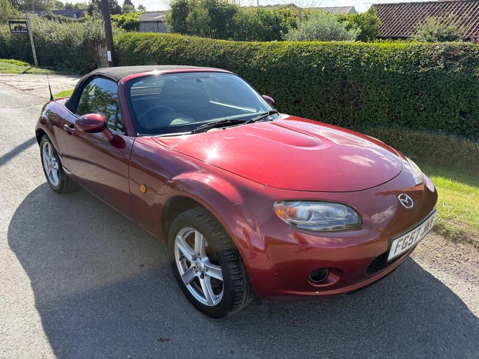
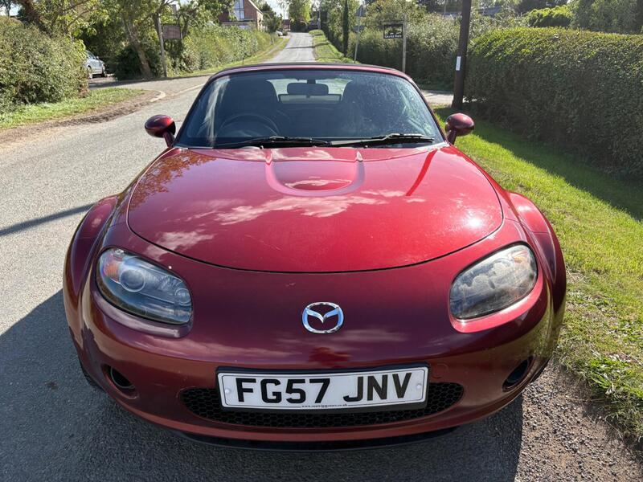
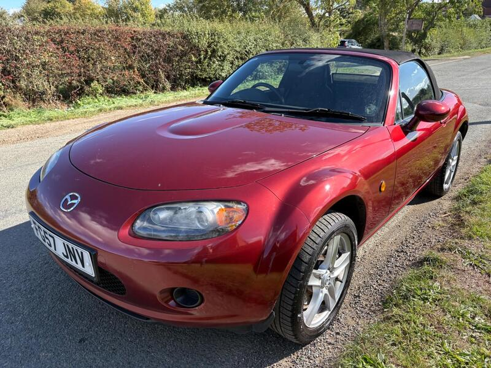
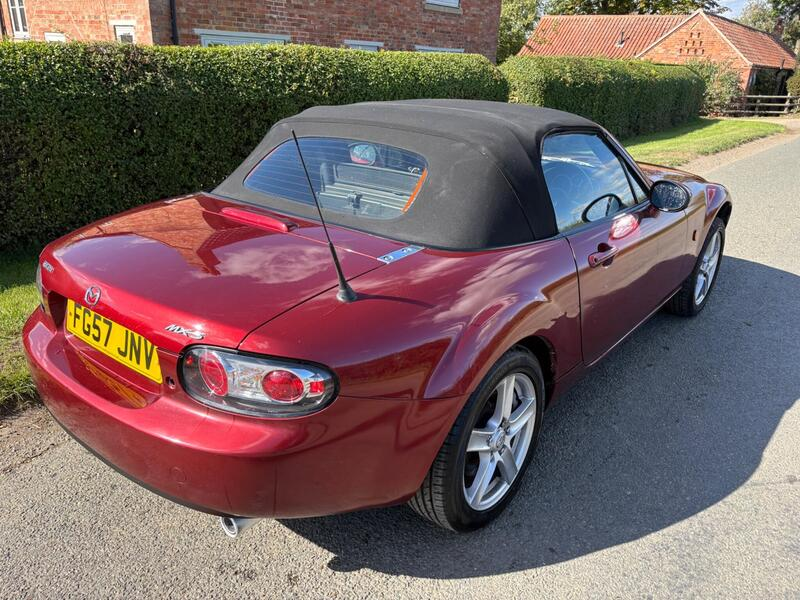

Seller photos from the AutoTrader ad.
Mazda MX-5 1.8i
A tidy-sounding 1.8 from a trader. Good, but it's a long way away.
Key facts
| Price | £2,995 |
|---|---|
| Year | 2007 |
| Miles | 72,000 |
| Model | Mazda MX-5 1.8i |
| Colour | Red |
| Registration | 2007 (57 reg) |
| Owners | 3 owners |
| Service history | Full |
| MOT (seller's text) | Not stated |
| Seller | Trade |
| Location | Nottingham |
| From GU7 | 119 mi (AutoTrader) |
| Checked | 15 October 2026 |
Why buy it
- 3 owners from new, described as well maintained
- Trade seller
Things to check
119 mi away
Confirm the service record and check rust underneath
- Mazda MX-5 NC / NB weak spots
Rear subframe, rear arches and sill ends; NB sills and chassis rails. Underseal can hide rot. Engine mostly bulletproof; timing-chain tensioner, seizing calipers, rear diff leaks, cracking coolant tank.
Seller says (extract)
“This 2007 Mazda MX-5 i is a well-maintained example of this popular roadster, having been cared for by only three owners from new. It is powered by a reliable 1.8-litre petrol engine, which provides a balanced driving experience suitable for both daily commuting and weekend trips. The vehicle combines classic sports car handling with the practicality expected of a Mazda, making it a sensible choice for those looking for an engaging drive without compromising on reliability. When considering running costs, this model offers several practical advantages that set it apart from many other sports cars. It benefits from a low insurance group rating, which helps to keep annual premiums more manageable for a wider range of drivers. Furthermore, the engine is designed with efficiency in mind, achieving a fuel economy of 39 mpg. This efficiency is complemented by low CO2 emissions, ensuring that the vehicle remains an economical option to run while still delivering the enjoyable performance associated with the MX-5 range.…”